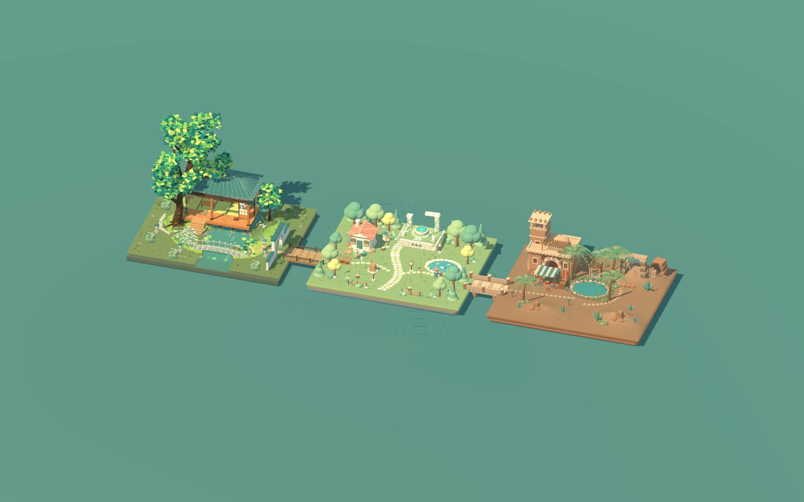

$GODOT_HEAD_INCLUDE
?
⛶
当前浏览器不支持画布，请使用新版 Chrome、Edge 或 Firefox。

agent-isles
进入世界
操作指南
移动 / 奔跑
WASD / Shift
跳跃 / 互动
空格 / E
切换视角
1 · 2 · 3 / V
观察 / 缩放
鼠标拖动 / 滚轮
放置 / 撤回木箱
F / Q
背包 / 水壶
I / G
隐藏界面 / 静音
Tab / M
环境 / 镜头动态
N / B
暂停 / 重新开始
Esc / R
关闭